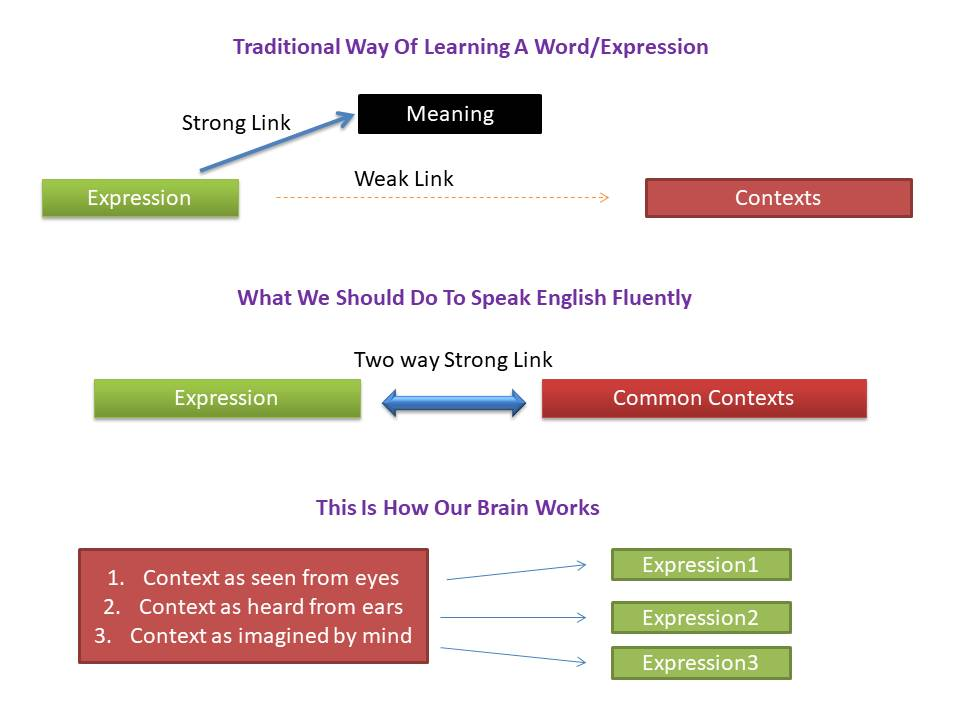

Frequently Asked Questions
Q. How are we different from the other English learning sites and what is the prerequisite before using Nalanda?
Nalanda: We use a unique
"Expressions technique" with popularity level assigned by the native English speakers. This technique leverages
on the patterns used in the communication by the native speakers and how our brain processes information before we
speak.
Some learners end up wasting their valuable time by
unknowingly learning not so commonly used words/expressions.
Our content is designed to help learners focus only on what is important from the perspective of speaking. This
will save your time and improve confidence.
We expect the users to have basic understanding of the English tenses before using Nalanda.
Q. Who can benefit from Nalanda?
Nalanda: We have divided the content based in two user groups: Students and Professionals.
Students are the ones who are learning English and aspire to get a job in future. In general, those who work in
non-team based environment also fall in this group. Examples include but are not limited to students, restaurant/retail
floor workers, tour guides.
Professionals are the ones who work in a team environment in an office and aspire to grow in their career and would
like to take up supervisory role. Examples include but are not limited to teachers, political activist, office workers,
supervisors and receptionists.
Q. What is our "expression technique"?
Nalanda: We define an "expression" as a reusable pattern in a communication. A sentence is spoken NOT in a sequence
of individual words. Instead, a sentence is made by a sequence of expressions(reusable patterns) and words.
Human brain tries to remember/use reusable patterns as one single unit. This way the brain does not have to think/process
hard to make a sentence quickly.
Even the quality of the communication can be significantly improved by using the frequently used
elegant expressions.
Q. Are the Idioms/phrasal verbs same as the expressions?
Nalanda: No. The idioms/phrasal verbs are only a small subset of the expressions. Not all phrasal verbs/idioms
are popular in spoken English. Many expressions are frequently used in spoken English but they are not found in dictionary
as phrasal verbs/idioms.
Q. How do we asses the popularity rating of the expressions?
Nalanda: We have placed trust in the native speakers and do not claim that the popularity rating is precise.
There is no need to be very picky about the popularity rating of some expressions.
We allow users to provide the comments on expressions and videos and would be happy to update the content based
on the feedback.
Q. How many expressions do we have in our database and why do we need to learn so many expressions?
Nalanda: The total number of expressions will be in thousands. But we have divided the content based on the user
types(Students/Professionals), their desired level(Basic/Advanced) and the popularity(High/Medium) of the expressions.
This makes the total stages to eight, starting from the Student/basic/high to Professional/Advanced/medium based
on their difficulty level.
We do not plan to keep the low popularity expressions as we advise the users to focus more on the directly useful
content to get better value out of their time and effort.
A good communication skill requires delivering a message with best clarity possible. It is up to the speaker to
use appropriate words/expressions that suit his style. Sometime we fail to recollect the appropriate word and use
alternate word that closely matches in meaning. It is perfectly normal in real world.
The speaker starts stuttering when he fails to find any suitable word at the right time so it becomes very useful
to know a good number of words/expressions for fluent communication.
Q. Why do we recommend memorizing expressions with common contexts, not with their meaning?
Nalanda:

People tend to remember the meaning with a word. One issue with this approach is that the brain has to retrieve
the context also in order to use the word correctly. This requires two operations by the brain to retrieve the context.
This adds to delay in preparing the sentence. We have observed that if we memorize word/expression with a few common
contexts, not with the meaning, then it becomes easy to use the word/expression at the time of speaking.
The trick we recommend is to use a short line with a few common contexts with the expression as a short line is
easy to memorize. The meaning should be evident from the short line.
For example, the expression 'put together' should be memorized as 'put together a plan/document/puzzle'. This way
the brain gets the common contexts easily and the expression can be used in the right context with confidence. We
have seen amazing results of this technique:)
Q. Why our focus is on spoken English? Is writing in English not equally important?
Nalanda: We are not saying that speaking in English is more important than writing. When you write in English
you have more time to think and more software tools to help you. Not just that the written communication is more
formal in nature and a sort of one way communication.
In spoken communication, we do not have the liberty to pause longer and think for the right words. Moreover, the
sentences you make are shorter and simpler. A child learns to speak without being able to read or write. We use techniques
that are very time saving and directly useful to those who struggle to speak. Most of our content is suitable for
writing, particularly in the Student advanced and the Professionals area.
Q. You can understand most of what native speakers speak in daily life/movies/soaps. Still you find it difficult
to speak comfortably. Why?
Nalanda: Based on our understanding, people tend to use words/expressions that they have used in the past and
are comfortable about. The words they have never spoken before, even if they know the meaning, may cause confusion
in the mind and the person starts stuttering and may become demotivated.
We advise learners to speak using simple words/expressions and avoid difficult and less popular words. Focus on
a few commonly used contexts rather than trying to learn every context of the expression. Be selective and prudent
in what you learn.
Try to memorize by speaking out loud so that your brain becomes familiar with the sounds of the words and your tongue
becomes flexible for the modulation required for pronunciation.
Some people struggle to speak the word 'statistics' although they understand the meaning when others speak. In order
to speak 'statistics' you need to train your tongue by speaking out loud few times. Same principle applies when you
want to speak like native speakers. Your mind and tongue needs training with the sounds of words/expressions. Just
because you can understand a language by listening is NOT ENOUGH to speak fluently and confidently.
Q. How did we prepare our database of expressions?
Nalanda: The expressions in our database are prepared by native English speakers. They provided common use cases
of expressions and their popularity in spoken English. This will directly help learners in staying focussed and not
wasting any time learning the stuff that is not so useful for their current needs.
Q. Why did we prepare videos when expressions provided good examples with context?
Nalanda: We understand that reading content from web pages can be boring at times and the content also may be
open to misinterpretation. In order to provide a unique experience to our learners we have prepared highly engaging
videos that will use some real-life themes to explain a number of expressions from our database.
Q. You may have been advised by your teachers and friends that you should read newspapers/magazines/novels and
watch English movies/soaps. How effective are these resources?
Nalanda: All these resources are a great way to learn English. You need to decide your objective first and the
amount of time you are willing to devote. If your aim is to speak English then how would you easily know whether
a particular word/expression is more suitable for writing or used in very formal speeches? Some expressions in movies
and soaps are vulgar slangs and using them without proper care can be a bit off-putting to your listeners.
In addition to movies/soaps, we recommend learning with Nalanda. Our content is developed within the boundaries
of decency to avoid any embarrassment to you. Our popularity rating for expressions will further help you to choose
the right content based on your needs and be more productive in your learning journey.
Q. Do we cover industry specific terminology?
Nalanda: No. All our content is generic and is suitable for good soft skills needed in daily life and any industry.
Q. What learning resources do we recommend outside the Nalanda website?
Nalanda: We recommend Nalanda as your important source of learning but the students can benefit a lot from good
comic books and english movies/soaps that use less crude language. YouTube videos are also very good resource. Avoid
speaking crude language even if you know the meaning well.
For professionals, we recommend resources that cover soft skills needed for the human resource and the sales professionals.
Q. Why do we recommend users to register on Nalanda?
Nalanda: Registered users will be able to use choose or ignore the expressions and videos based on their liking.
We will provide good help to the registered users to revise the stuff they have learned.
Q. Is the content of Nalanda suitable for English certifications/exams?
Nalanda: The content of Nalanda is developed specifically for spoken English. The content of Nalanda can be particularly
helpful for some certifications/exam that have a test for spoken English.
Q. Do we suggest/promote a specific accent for English?
Nalanda: No. Teaching English with a specific accent is not our objective. You can speak good English in your
own accent. However, we suggest neutral accent so that people of other countries can understand you well.
Q. Several learners think that they should speak fast in order to be fluent. What is our suggestion?
Nalanda: Based on our experience, speaking with proper pauses and modulation sounds more natural to your listeners.